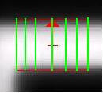

To access: Invoke the GL Vs Pixel window (see “The CrossSection Graph (GL Vs Pixel Window)”)
The CD Measurement Results section of the GL Vs Pixel window is a report that displays the inputs specified for CD analysis as well as the results.
An example report is shown in Figure 1.
The CD Measurement Report is divided into three functional areas:
Input
The Input area contains the Target CD, Threshold GL, Number of Measurements, and Distance between Measurements used to compute the CD. Note that input values change if you left-click on the CrossSection window plot area.
Measurement Unit
The Measurement Unit area allows you to specify the unit to display the results of the CD Measurement operation, either in 1x (wafer) or 4x (mask units).
Results
The Results area displays the results of the CD Measurement operation.
Fields |
Description |
|
|---|---|---|
Input |
Specifies inputs used to compute the CD. |
|
Target CD |
Specifies that the gray level on the second selected image be computed where the Target CD is located and then the results be applied to compute the CD on the other image. Refer to the Usage Notes of this section for an example. |
|
Threshold GL |
If Threshold GL (0-255) is specified, then Calibre DefectReview computes the CD on the images at the gray level value. If GL % (0-100) Image is specified, then Calibre DefectReview first computes the threshold GL value based on the dynamic range of the second selected image of the current defect. It then takes the computed GL value to measure the CD. Refer to the Usage Notes of this section for examples. |
|
Number of Measurements |
Specifies the number of CD measurements. |
|
Distance Between Measurements |
Specifies the distance between measurements in nanometers between the cross section bar lines. The minimum value that can be entered is calculated as a Pixel Size (in nm) / interpolation ratio. The maximum value is fixed to 200 nm. The default value can be configured using the distanceBetweenMeasurement node in the dat-ini.xml file. Refer to the Usage Notes of this section for an example. |
|
Measurement Unit |
Reports the results in the units specified by the user. If you select (nm@1x), then all the results of the CD Measurements are displayed in 1x (wafer) coordinates, and if you select (nm@4x), then the results are displayed in mask coordinates. |
|
Results |
Reports the results of the CD Measurement operation. |
|
Number of Measurements |
The cross section bar displays the cross section area on which Cross Section Analysis and CD measurement is computed. The cross section line displayed in the CrossSection window graph displays the plot only for the center line displayed in the cross section bar. The Number of Measurements specifies the number of additional lines to be drawn parallel to the center line. The number of measurements is used to analyze the cross section and CD on a region to view variations of the CD across that region instead of computing only on a single line. For example, if the number of measurements is set to 7, then the Cross section and CD is computed on 7 lines as shown in Figure 2. The cross section bar displays the parallel lines on which the computation is done. The line displayed in the cross section bar is considered as the center line. Figure 2. Number of
Measurements
 |
|
First Selected Image Width (nm@1x) |
Specifies the CD value calculated on the image selected in the first combo box (drop-down list) and is shown in the unit selected by the user. You can select any image from the drop-down list as the first image. When you navigate defects, the selected image is recorded. |
|
Second Selected Image Width (nm@1x or nm@4x) |
Specifies the CD value is calculated on the second selected image and is shown in the unit selected by the user. . You can select any image from the drop-down list as the second image. During navigation of defects, this selected image is recorded. Note: The Target CD value is calculated based on this image value. |
|
CD Variation[%] |
Specifies the CD variation between the first and second selected images and is reported in terms of percentage. |
|
CD Variation [nm@1x or nm@4x] |
Specifies that the CD variation between the first and second selected images and is displayed in units selected by the user. |
|
Center Average Minimum Maximum |
Reports the results of CD variation. Depending on the Number of Measurements, CD could be computed multiple times.
For example, if the CD is computed on 7 measurements, then the CD is computed 7 times on the first selected image and 7 times on the second selected image. The maximum, minimum, average, and center line computations are reported in their respective columns. |
|
Use global GL/Target CD |
Updates the CD measurement report with the current input and display settings. If you hover your mouse cursor over this button, it displays the image name on which the Target CD is calculated. |
|
The following are examples of CD Measurement input:
Target CD — The Target CD Value is specified as 90 nm@1x in the CD Measurement Properties dialog box. The Threshold GL is computed by Calibre DefectReview and is displayed as shown in Figure 3.
Threshold GL (0-255) — The Threshold GL (0-255) Value is specified as 50 in the CD Measurement Properties dialog box. Calibre DefectReview computes the CD on the first and second selected images at the gray level value and is displayed as shown in Figure 4.
Threshold GL % (0-100) Image — The Threshold GL % (0-100) Image is specified as 40 in the CD Measurement Properties dialog box. Calibre DefectReview first computes the threshold GL value based on the dynamic range of the second selected image of the current defect. It then takes the computed GL value and measures the CD (see Figure 5).
Distance between Measurements — The Number of Measurements is specified as 3 and the Distance between Measurements as 100 nm (shown in Figure 6). In this case, three lines are drawn internally; one in the center and two lines (one on either side of the center line) 100 nm apart from the center line.
The default value of the Distance between Measurements entry field can be configured using the distanceBetweenMeasurement node in the dat-ini.xml file. Figure 7 shows an example.